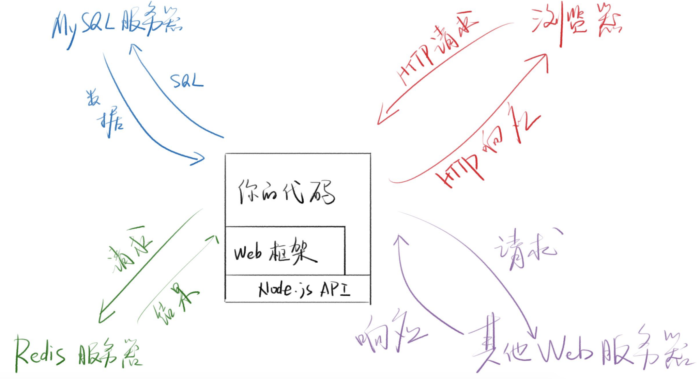
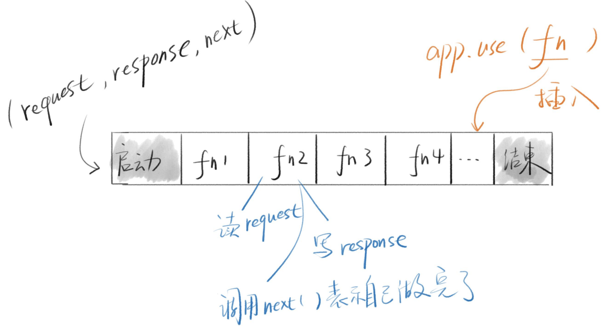

1 HTTP协议
1.1 curl基本用法
-
curl -s -v 网址-s是silent，用于隐藏进度条-v是verbose，用于打印全部header*开头的是注释>开头的是HTTP请求<开头的是HTTP响应
-
举例
curl -s -v http://www.baidu.com- 如果得到301和 Location，表示永久重定向，于是重新请求（可以使用
-L自动重定向）
curl -s -o nul -v https://www.baidu.com * TCP_NODELAY set * Connected to www.baidu.com (180.101.49.12) port 80 (#0) > GET / HTTP/1.1 > Host: www.baidu.com > User-Agent: curl/7.64.1 > Accept: */* > < HTTP/1.1 200 OK < Accept-Ranges: bytes < Cache-Control: private, no-cache, no-store, proxy-revalidate, no-transform < Connection: keep-alive < Content-Length: 2381 < Content-Type: text/html < Date: Sun, 22 Aug 2021 13:22:47 GMT < Etag: "588604c8-94d" < Last-Modified: Mon, 23 Jan 2017 13:27:36 GMT < Pragma: no-cache < Server: bfe/1.0.8.18 < Set-Cookie: BDORZ=27315; max-age=86400; domain=.baidu.com; path=/ < { [2381 bytes data] * Connection #0 to host www.baidu.com left intact * Closing connection 0-o nul是为了隐藏HTML文本,内容太多不方便演示- Linux或Mac要将nul改成/dev/null
- 如果得到301和 Location，表示永久重定向，于是重新请求（可以使用
1.2 请求和响应
| 请求 | 响应 | ||
|---|---|---|---|
| 请求行 | POST /xxx HTTP/1.1 | 状态行 | HTTP/1.1 301 Moved Permanently |
| 请求头 | HOST: baidu.comUser-Agent: curl/7.61.1Accept: “/” | 响应头 | Content-Type: text/htmlContent-Length: 193Location: https://xxx.com |
| 空行 | 回车 | ||
| 请求体/消息体 | {“username” : “gsq”} | 响应体/消息体 | <!DOCTYPE html><html></html> |
- 如果请求体的内容为JSON，那么请求头就要有
Content-Type: application/json - 如果响应体内容为JSON，那么响应头也要有
Content-Type: application/json - HTTP的复杂性就在于消息头有很多很多功能各不相同的字段
1.3 Web框架
-
功能
- 更方便地处理HTTP请求与响应
- 更方便地链接数据库、Redis
- 更方便的路由
- 其他：HTML模块
-
理念
- Web框架的主流思路都是MVC
- model层处理数据相关逻辑
- View层处理视图相关逻辑，前后端分离后，View交给前端
- Controller负责其他逻辑
-
架构示意

1.4 处理HTTP请求与响应
- 最简单的封装（数组）
- 将请求封装为
[['get','/xxx'],{请求头},'请求体'] - 将响应封装为
[status,{响应头},'响应体']
- 将请求封装为
- Node.js封装
- Node.js将其封装到http模块中
- 使用request对象读取请求
- 使用response对象设置响应
- Express封装
- 只需理解Express的编程模型即可
- 中文文档：expressjs.com/zh-cn/ 太老了
2 Hello Express
2.1 js版本
- 初始化项目
mkdir express-demo-1 && cd express-demo-1
yarn init -y
git init
touch .gitignore
yarn add express
git add . && git commit -m 'init'
git remote add origin git@github.com:GSemir0418/express-demo-1.git
git push -u origin master
- 创建app.js
var express = require('express')
var app = express()
// 用于对GET /xxx 请求做出响应
app.get('/', function (req, res) {
res.send('HelloooWorld!')
})
// 开启端口监听
app.listen(8080, function () {
console.log('Example app listening on port 8080')
})
- 执行node app命令运行服务器后，浏览器访问8080端口，会展示
HelloooWorld!
2.2 使用TS
- 准备工作
yarn global add typescript ts-node ts-node-dev
yarn add @types/express --dev// 安装express类型支持，一般类型文件都是--dev
tsc --init // 创建tsconfig.json文件
-
修改tsconfig中的
target为es2015（即es6），修改noImplicitAny为true -
创建app2.ts
import express from 'express'
const app = express()
// 用于对GET /xxx 请求做出响应
app.get('/', function (req, res) {
res.send('HelloooTS!')
})
// 开启端口监听
app.listen(8080, function () {
console.log('Example app listening on port 8080')
})
- 项目源码仓库：https://github.com/GSemir0418/express-starter.git
2.3 app的类型
- ctrl点击app，找到其类型
- 类型为Express接口
- Express extends Application
- Application extends EventEmitter, IRouter,…
- 其中IRouter包含了get/post/put等方法
3 Express 脚手架
3.1 基本使用
- 安装
yarn global add express-generator
- 在指定路径下，使用ejs后端模版引擎，搭建项目
express --view=ejs 目录名
-
将
package.json中的start命令改为node-dev ./bin/www，每次更新后自动刷新。 -
目录结构
-
bin/www：应用主入口，因为真正的入口是app.js，所以www文件先把app.js文件引进来，其余的内容主要就是创建了一个node HTTP server以及监听事件的错误处理。
-
app.js：应用入口文件，主要做了以下的事
- 引入之前使用
npm install下载的包，并创建express对象； - use上面引入的包；
- 引入routes文件夹里面的文件，这些文件主要处理URL路由；
- 关联（use）路由路径与引入的文件；
- 设置（set）模板，views 设置了模板的位置；指定使用的模板引擎；
- 最后进行错误处理
// 引入资源及中间件 var createError = require('http-errors'); var express = require('express'); var path = require('path'); var cookieParser = require('cookie-parser'); var logger = require('morgan'); // 引入index.js和users.js路由配置文件 var indexRouter = require('./routes/index'); var usersRouter = require('./routes/users'); // 实例化express var app = express(); // 视图引擎设置 // 设置视图的目录为当前目录下的views文件夹 app.set('views', path.join(__dirname, 'views')); // 设置视图引擎为ejs app.set('view engine', 'ejs'); // 使用上面加载的资源 app.use(logger('dev')); app.use(express.json()); app.use(express.urlencoded({ extended: false })); app.use(cookieParser());// 使用cookie app.use(express.static(path.join(__dirname, 'public')));// 指定公共资源文件夹 // 为请求路径分配路由配置 app.use('/', indexRouter); app.use('/users', usersRouter); // catch 404 and forward to error handler app.use(function (req, res, next) { next(createError(404)); }); // error handler app.use(function (err, req, res, next) { // set locals, only providing error in development res.locals.message = err.message; res.locals.error = req.app.get('env') === 'development' ? err : {}; // render the error page res.status(err.status || 500); res.render('error'); }); module.exports = app; - 引入之前使用
-
routes：以users.js为例，首先加载express，通过express获取到router对象。使用router对象指定路由的方法和路径。由于在app.js已经指定
/users到本文件，因此当浏览器请求/user时，会执行下面的回调函数。回调函数有第三个参数next，主要用于中间件中，即将数据传递到下一个方法去处理。var express = require('express'); // 实例化router对象 var router = express.Router(); /* GET users listing. */ // 这是基于users/的根目录 router.get('/', function (req, res, next) { res.send('users发送这句话'); }); router.get('/xxx', function (req, res, next) { res.send('xxx发送这句话'); }); module.exports = router; -
views：视图模版文件，默认为pub模板文件，本文指定模板为ejs格式，ejs允许在html中插入js语句，格式为
<%= javascript codes %><!DOCTYPE html> <html> <head> <title><%= title %></title> <link rel='stylesheet' href='/stylesheets/style.css' /> </head> <body> <div>hhahahah</div> <h1><%= title %></h1> <p>Welcome to <%= title %></p> </body> </html>
-
3.2 改写为TS
- 把app.js复制到app2.ts
- yarn add@types/node-dev这样才能使用require
- 将var替换为const
- 添加RequestHandler和ErrorRequestHandler断言
// 有两种方式
// 第一种可以给每个参数分别添加类型
// 第二种直接给整个方法添加as断言
app.use(function (req, res, next) {
next(createError(404));
} as RequestHandler);
- 将bin/www中的入口改为app2.ts
- 添加start:ts脚本，将
node改为ts-node
4 app.use和Express编程模型
4.1 app.use()
- 尝试使用request.url和response.send()
const express = require('express')
const app = express()
app.use((request, response, next) => {
console.log(request.url)
response.send('hi')
})
app.listen(8080,() => {
console.log('正在监听8080端口')
})
-
此时浏览器访问8080端口，控制台会打印出路径"
/"，浏览器出现“hi”- 说明多次使用app.use()时，后面的不会得到执行。
-
使用
next()可以使得后面的app.use()执行
app.use((request, response, next) => {
console.log(request.url)
response.send('hi')
next()
})
app.use((request, response, next) => {
console.log('第二次响应')
response.send('hi')
})
-
但浏览器只显示了一个"hi"，与预期的两个"hi"不符。这是因为同一次请求不允许发送两次数据，即两次
responde.send() -
因此用流来改写response：
app.use((request, response, next) => {
console.log(request.url)
response.write('hi')
next()
})
app.use((request, response, next) => {
console.log('第二次响应')
response.write('hi')
next()
})
// 可以将关闭响应流的方法单独写在最后的use中
app.use((request, response, next) => {
console.log(request.url)
// 用end方法结束响应流
response.end()
})
4.2 Express编程模型（核心）

4.3 中间件
-
上图中的
fn就是中间件，因为它是插入到启动和结束中间的物件 -
中间件编程模型的优点
- 这种模型使得每个功能都可以通过一个函数来实现
- 然后通过app.use()将这个函数整合起来
- 如果把函数放到文件或npm中，就实现了模块化
-
实现logger方法
- 创建logger.js
const logger = (prefix) => { // 接收一个参数，返回一个函数 return (request, response, next) => { // 打印 console.log(`${prefix}:${request.url}`) next() } } module.exports = logger- app.js引入logger并use
const express = require('express') const logger = require('./logger') const app = express() app.use(logger('dev')) app.use((request, response, next) => { response.send('hi') next() }) app.listen(8080, () => { console.log('正在监听8080') })- 此时浏览器访问
localhost:8080/xxx，控制台将打印出dev:/xxx
4.4 路由
- 利用app.use()实现路由
...
app.use((request, response, next) => {
// path不包括请求参数，url包含请求参数(?id=1)
if (request.path === '/xxx' && request.method === 'GET') { // 注意请求方法要大写
response.send('this is xxx page')
}
next()
})
...
-
更方便的写法（语法糖）
app.use('/xxx', fn)
app.use('/xxx', (req, res, next) => { res.send('this is xxx page') next() })-
app.get('/xxx', fn) -
app.post('/xxx', fn) -
app.route('/xxx').all(f1).get(f2).post(f3)
4.5 错误处理
-
next(error)- 会直接进入自定义或默认的
errorHandler，不执行后面的中间件
const express = require('express') const logger = require('./logger') const app = express() app.use(logger('dev')) app.use((request, response, next) => { console.log('执行后会报错的中间件') next('未登录') }) app.use((request, response, next) => { console.log('不会执行的中间件') next() }) app.listen(8080, () => { console.log('正在监听8080') })- 浏览器访问8080端口，显示“未登录”，且控制台打印出“执行后会报错的中间件”和“未登录”
- 会直接进入自定义或默认的
-
自定义
errorHandler- 一般在最后定义，可以定义多个：
app.use((error, request, response, next) => { if (response.headersSent) { return next(error) } response.status(500) response.send(error) })
最后修改于 2021-08-22